graph TD
%% Styling
classDef default fill:#f8fafc,stroke:#cbd5e1,stroke-width:2px,color:#334155,rx:8px,ry:8px,font-family:Inter;
classDef accent fill:#e0f2fe,stroke:#38bdf8,stroke-width:2px,color:#0f172a,rx:8px,ry:8px,font-family:Inter,font-weight:600;
linkStyle default stroke:#94a3b8,stroke-width:2px;
subgraph DS [Data Science]
AI[Artificial Intelligence] --> ML[Machine Learning]
ML --> DL[Deep Learning]
end
Mathematical Foundations of AI & ML
Unit 1: What Learning Means in Engineering and Materials
Prof. Dr. Philipp Pelz
FAU Erlangen-Nürnberg


Title + positioning in SS26 lecture triad
- MFML provides the mathematical backbone for both applied SS26 courses.
- Materials Genomics (MG) and ML for Characterization/Processing (ML-PC) consume this notation directly.
- Goal: shared conceptual language so students can transfer methods across domains.
Core textbooks for this course

Neuer:
Mathematical Foundations for Machine Learning
McClarren:
Machine Learning for Engineers
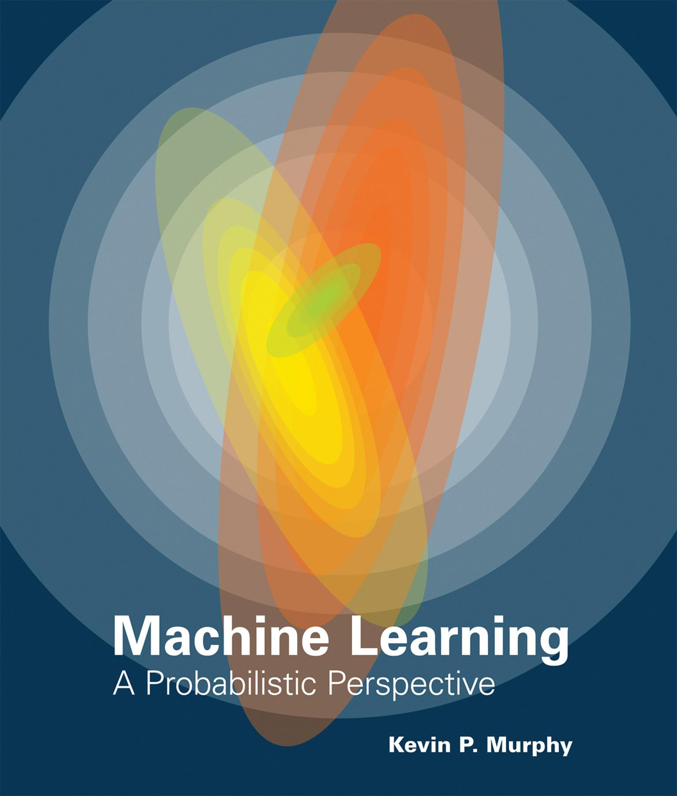
Murphy:
Machine Learning: A Probabilistic Perspective

Bishop:
Pattern Recognition and Machine Learning
Why this course now?
- Many students can “run models” but struggle to justify modeling decisions.
- Engineering ML requires validity, uncertainty, and failure analysis, not only accuracy.
- This unit reframes ML from tool usage to principled scientific modeling.
Learning outcomes for Unit 1
By the end of this lecture, students can:
- formulate supervised learning as a risk-minimization problem,
- explain model/loss/regularization/generalization coherently,
- identify leakage and overconfidence risks in materials workflows,
- separate lecture-core theory from exercise implementation tasks.
What you should already know
- Calculus basics, linear algebra, and SVD are assumed.
- Very basic Python is assumed (NumPy-level competency).
- We now reinterpret these prior tools as components of learning systems.
What students often confuse
- AI vs ML vs deep learning vs statistics vs simulation.
- Predictive fit vs scientific explanation.
- High benchmark score vs deployable trustworthy model.
Quick map: AI vs ML vs DL vs Data Science
- AI: broad umbrella for intelligent systems.
- ML: data-driven function estimation inside AI.
- DL: model family inside ML.
- Data science: includes data engineering, diagnostics, domain interpretation, and deployment context (Sandfeld et al. 2024).
Domain knowledge matters
- Materials and engineering constraints reduce the hypothesis space.
- Physically impossible predictions are still wrong even if numerically low-loss.
- Domain priors improve data efficiency and robustness.
Roadmap of today
- Part A: model concept and epistemology.
- Part B: formal supervised learning core.
- Part C: validation, uncertainty, and trust.
- Part D: transfer to materials tasks and exercise handoff.
What is a model? (Neuer 1.1)
- A model is a purposeful abstraction of reality for prediction and reasoning.
- Models trade realism for tractability and decision usefulness.
- Good models are evaluated at the decision point, not by aesthetics (Neuer et al. 2024).
First-principles models
- Example: classical gravitation as a mechanistic model.
- Strengths: interpretability, invariance, extrapolation under assumptions.
- Limits: real systems often violate simplifying assumptions.
Data-based modeling (top-down)
- Learn relationships from observed \((x,y)\) pairs.
- Assumes relevant structure is represented in measured data.
- Performance depends on data quality, coverage, and split design (Neuer et al. 2024).
Example: Additive Manufacturing (3D Printing)
- Bottom-up limits: Simulating melt-pool multiphysics for every layer is computationally intractable.
- Top-down approach: Predict final part porosity (\(y\)) directly from laser parameters and in-situ sensor data (\(x\)) (Meng et al. 2020).
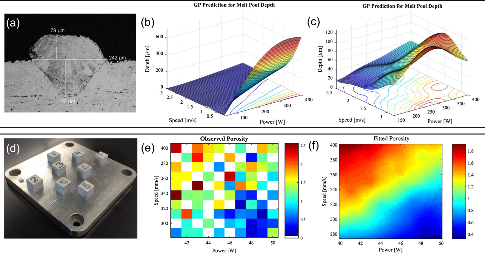
When first-principles is insufficient
- Complex process chains can be nonlinear, high-dimensional, and partially observed.
- Closed-form mechanistic models can be unavailable or too expensive.
- Hybrid strategies (physics + data) are often the engineering sweet spot.
White-box / grey-box / black-box
- White-box: explicit mechanism and interpretable parameters.
- Black-box: high predictive flexibility, low immediate interpretability.
- Grey-box: blends mechanistic structure with learned components (Neuer et al. 2024).
graph LR
%% Styling
classDef default fill:#f8fafc,stroke:#cbd5e1,stroke-width:2px,color:#334155,rx:8px,ry:8px,font-family:Inter;
classDef accent fill:#e0f2fe,stroke:#38bdf8,stroke-width:2px,color:#0f172a,rx:8px,ry:8px,font-family:Inter,font-weight:600;
linkStyle default stroke:#94a3b8,stroke-width:2px;
Model[Model Type]:::accent --> WB[White-box]:::accent
Model --> GB[Grey-box]:::accent
Model --> BB[Black-box]:::accent
WB --- WBdesc[Physics-based]
GB --- GBdesc[Hybrid]
BB --- BBdesc[Data-driven]
Why black-box criticism appears
- Safety, traceability, and auditability requirements in engineering settings.
- Difficulty diagnosing failure causes without behavioral probes.
- High-stakes contexts demand calibrated confidence and explainability.
Explainability as spectrum, not binary
- Global explainability: model-level behavior patterns.
- Local explainability: case-level attribution/sensitivity.
- Explainability quality must be judged against stakeholder questions.
Hybrid modeling mindset
- Put trusted physics where available.
- Learn residuals or unknown couplings from data.
- Keep interfaces explicit so assumptions are inspectable and testable.
Mini-checkpoint question
- Is linear regression always “white-box” in practice?
- What if features are heavily engineered or leakage-contaminated?
- Discussion target: transparency depends on entire pipeline, not formula alone.
Structural classification of data
-
Structured: Predefined schema and format (e.g., SQL tables, technical process data).
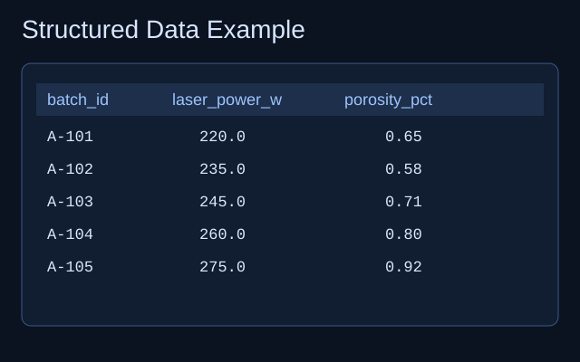
-
Unstructured: No fixed data model (e.g., images, books, health records).
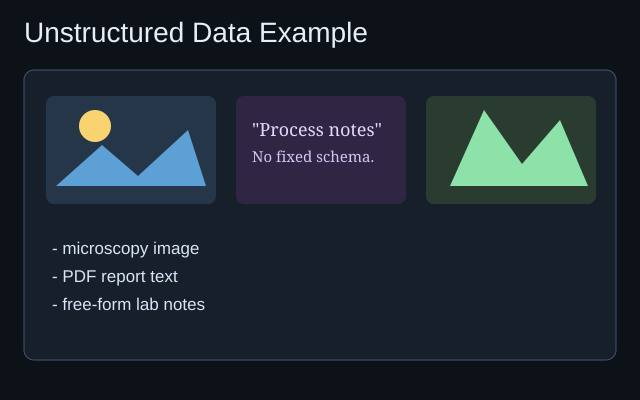
-
Semi-structured: Mix of ordered and flexible components (e.g., emails, digital twin memory).
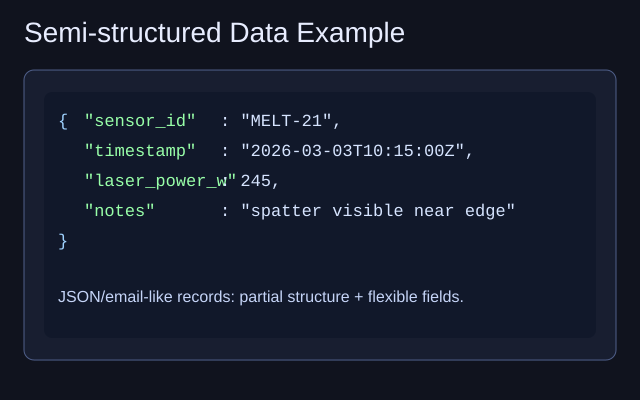
Quantitative and qualitative classification
-
Quantitative:
-
Continuous: Can assume any value within a range (e.g., length, analog signals).
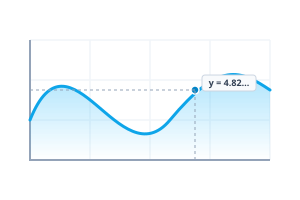
-
Discrete: Clearly separable, countable points (e.g., product counts, digital data).
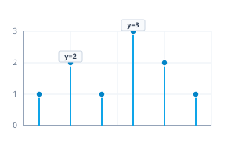
-
Continuous: Can assume any value within a range (e.g., length, analog signals).
-
Qualitative:
-
Nominal: Descriptive attributes without intrinsic order (e.g., material names, colors).
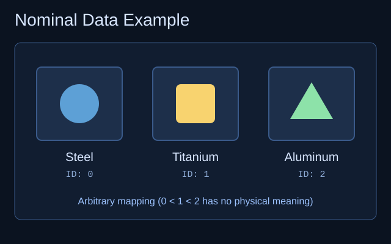
-
Ordinal: Data with a logical ranking or sequence (e.g., months, quality ratings).
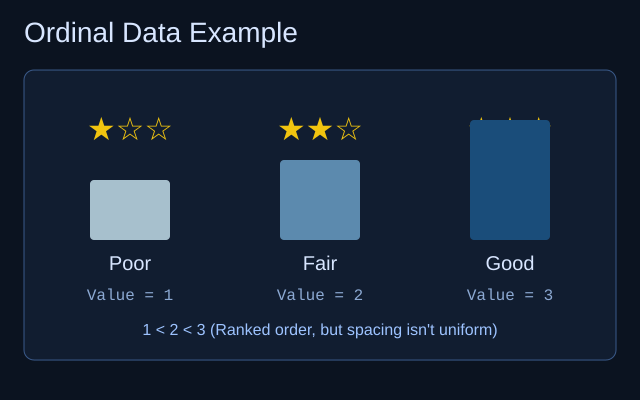
-
Cardinal: Data supporting arithmetic operations.
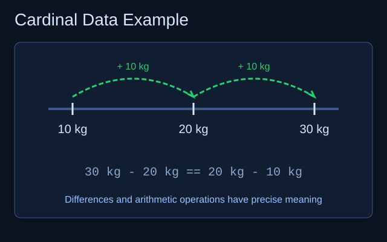
-
Binary: Boolean (True/False, Pass/Fail) states.
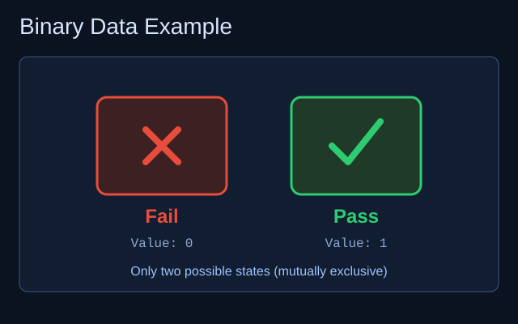
-
Nominal: Descriptive attributes without intrinsic order (e.g., material names, colors).
Time series and labels
-
Time Series: Data points indexed and ordered by time; typically cardinal and discrete in modern systems.
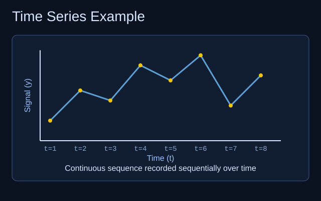
-
Labels: Special qualitative or quantitative variables used as training targets in mapping \(x \to y\).
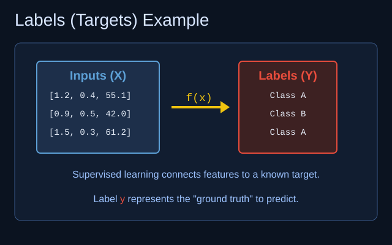
Measurement scales
- Nominal scale: Sorting into categories; operations \(=, \neq\).
- Ordinal scale: Introduces ranking; operations \(<, >\).
-
Interval scale: Meaningful distances, but no absolute zero (e.g., \(^{\circ}\)C); allows \(+, -\).
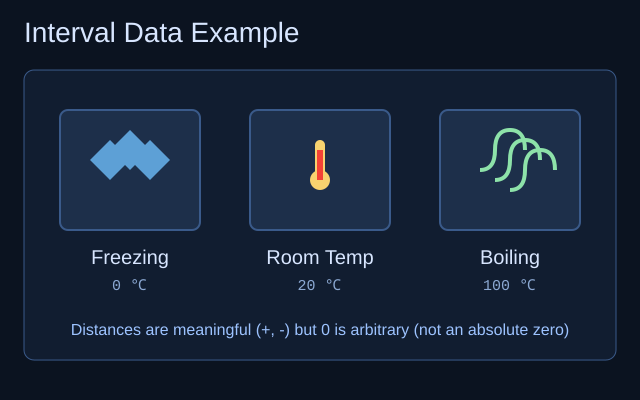
-
Ratio scale: Absolute zero exists; enables ratios and scaling (e.g., Kelvin); allows \(\times, \div\).
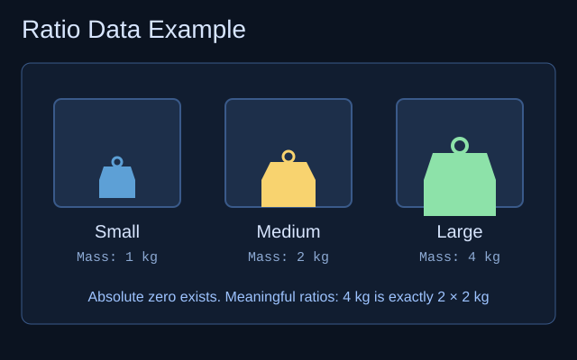
Data Preprocessing: Goals and Overview
Data preprocessing encompasses all steps to turn raw sensor outputs into a meaningful dataset.
- Increases interpretability and focuses learning models on relevant aspects.
- Often requires more labor than building the ML models themselves.
Data Cleaning: Fixing the Foundation
Common Issues
- Missing values (NaNs) from dropped transmissions.
- Invalid ranges or duplicated entries.
Mitigation
- Interpolation: Estimate missing data via neighbors.
- Replacement markers: E.g., substituting \(-1000\) for a NaN temperature reading.
Best Practice: Always attempt to fix data problems at the physical source (e.g., cleaning a dirty camera lens) before mitigating digitally.
Normalization: Scaling for Comparability
Normalization rescales variables into a comparable numerical range.
- Min-Max Scaling (\([0,1]\)): Highlights relative relationships regardless of absolute magnitude.
- Normalization to Maximum: Divides by \(\max(|x_i|)\) to bound within \([-1, 1]\).
- Subtraction of Mean (Z-score): Focuses strictly on variation (\(\mu=0\)).
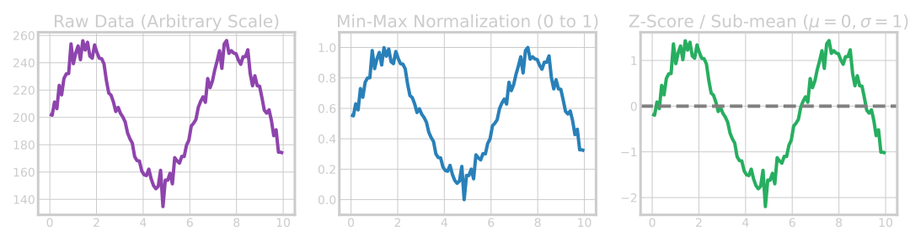
Filtering Data & Moving Averages
- Moving Average: Smooths high-frequency noise by averaging sequential points.
- Median Filter: Robust against extreme outliers; preserves sharp step changes.
import numpy as np
# Noisy 1D signal (e.g. sensor stream)
x = np.array([1.0, 1.2, 0.9, 5.0, 1.1, 1.0, 0.95]) # spike at index 3
# Moving average — box convolution, equal weights
def moving_average(a: np.ndarray, window: int = 3) -> np.ndarray:
k = np.ones(window) / window
return np.convolve(a, k, mode="same")
# Median filter — sliding window median (robust to spikes)
def median_filter_1d(a: np.ndarray, size: int = 3) -> np.ndarray:
pad = size // 2
padded = np.pad(a, (pad, pad), mode="edge")
return np.array(
[np.median(padded[i : i + size]) for i in range(len(a))]
)
x_ma = moving_average(x, window=3)
x_med = median_filter_1d(x, size=3)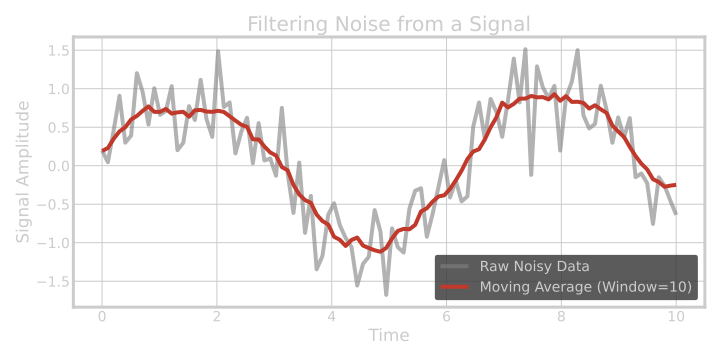
Triggering and Event Extraction
For continuous time-series, identifying the phenomena of interest is critical.
- Triggering: Cutting out specific repetitive windows (e.g., a motor turning on) based on a threshold.
Example: Extraction via threshold triggering
Triggering Results
A continuous process containing localized events is sliced based on a defined threshold:
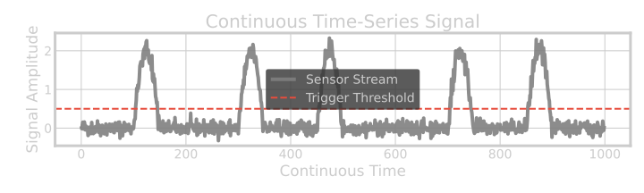
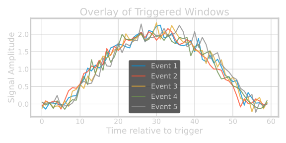
Differentiation
Differentiation removes constant offsets and reveals slope dynamics, making it easier to study changes rather than absolute values.
Example: First-order differences
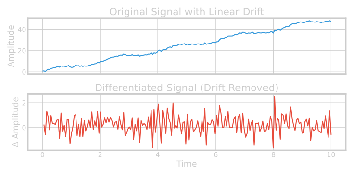
Fourier Transformation (FFT)
Transforming temporal signals into frequency space exposes hidden periodic patterns that are invisible in the time domain.
Example: Fast Fourier Transform
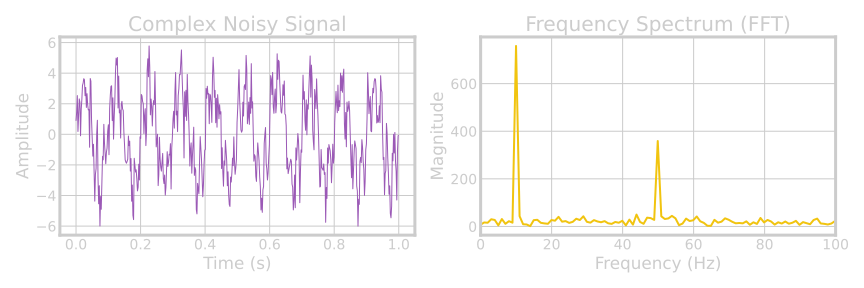
Discrete Wavelet Transform (DWT)
Unlike FFT which loses time resolution, DWT captures both frequency (scale) and location in time, making it ideal for non-stationary signals.
Example: 1D DWT Decomposition
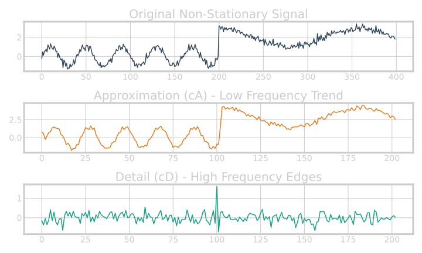
Supervised Learning: Overview
Machine Learning is broadly categorized into:
- Supervised Learning: Mapping inputs \(x\) to known answers (labels) \(d\).
- Unsupervised Learning: Finding hidden structures without labels.
- Reinforcement Learning: Interacting with an environment to maximize rewards.
Supervised Learning requires a dataset of input-output pairs: \(\mathcal{D} = \{(\mathbf{x}_i, d_i)\}_{i=1}^N\)
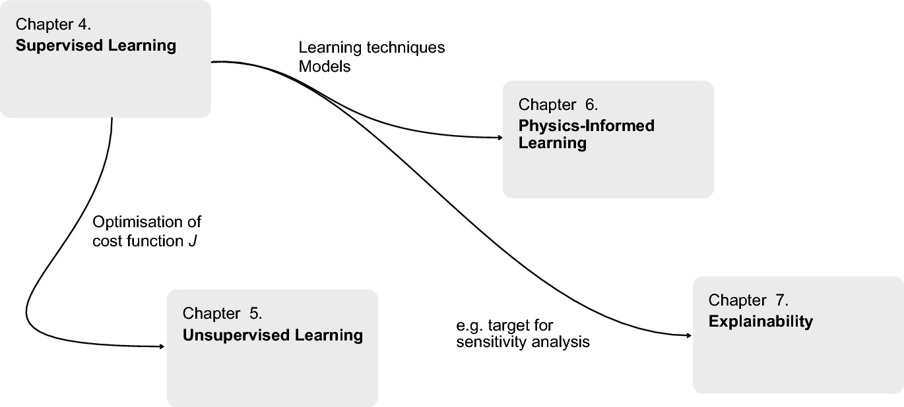
ML Overview
The Learning Strategy: Optimization
We learn by iteratively changing a model \(f(x; \pi)\) to match target \(d\).
- Define a Cost Function \(J(f)\), measuring the gap between prediction and reality.
- Example (Least Mean Squares): \[ J = (d - f(x))^2 \]
- Adjust model parameters \(\pi\) in the direction that minimizes \(J\).
Classification vs. Regression
Classification
- Assigning inputs to discrete categories.
- Result set is finite. Ex: \(\mathcal{Y} = \{\text{"Motorcycle"}, \text{"Traffic Light"}\}\).
- Binary Alarm Ex: \(d \in \{0, 1\}\) (Harmless vs. Danger).
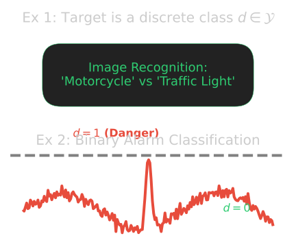
Regression
- Replicating a continuous functional curve.
- Result set lies on a numerical scale, reflecting continuous predictions.
- Ex: Outputting a risk probability (\(y = 0.8\) for 80% risk) instead of a hard limit.
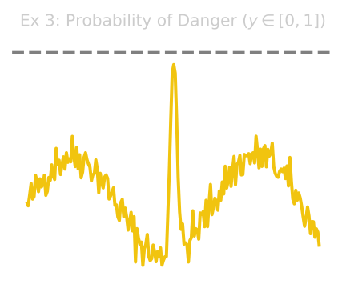
The Golden Rule of Model Evaluation
To prove a model actually learned the underlying physics (and didn’t just memorize), we split the data.
- Training Set: Used exclusively to update model parameters and minimize \(J\).
- Test Set: Held back entirely; used only for final performance grading.
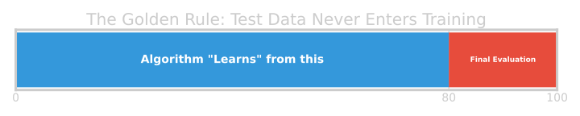
Golden Rule: Elements of the Test set must never enter training!
Evolutionary Learning: A Brute-Force Example
How do we minimize the cost \(J\)? One simple (but inefficient) way is randomly guessing parameters.
- Define Fitness: \(F = \frac{1}{J}\)
- Randomly mutate parameters \(\pi \to \tilde{\pi}\).
- If \(F\) increases (Cost \(J\) drops), keep the change!
- Repeat endlessly.
This demonstrates that any optimization routine that navigates the cost landscape can theoretically “learn”. Neural Networks simply do it far more intelligently using calculus (gradients).
The LMS Adaptive Filter
The Least-Mean-Squares (LMS) adaptive filter iteratively adjusts its weights \(\mathbf{a}\) to map an input \(\mathbf{x}\) to a target \(d\). This is an archetype for gradient-descent optimization in machine learning.
Theory & Optimization Pipeline
- Calculate the current prediction: \(y^{(i)} = \mathbf{a}^{(i)T} \mathbf{x}^{(i)}\)
- Determine the Error: \(\epsilon^{(i)} = d - y^{(i)}\)
- Update weights (where \(\eta\) is the learning rate): \[ \mathbf{a}^{(i+1)} = \mathbf{a}^{(i)} + \eta \cdot \epsilon^{(i)} \cdot \mathbf{x}^{(i)} \]
LMS Convergence & Hyperparameters
The Learning Rate
- The learning rate \(\eta\) is a critical hyperparameter.
- Small \(\eta\): Smooth, guaranteed convergence, but very slow.
- Large \(\eta\): Rapid adaptation, but risks instability and divergence.
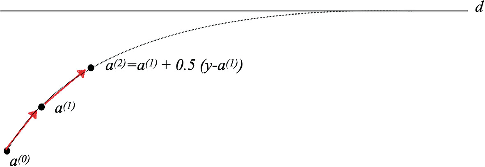
Gradient Descent Intuition (2D)
Materials example 1: process→property regression
- Inputs: process parameters, composition, heat treatment metadata.
- Target: hardness / tensile strength (continuous).
- Risks: confounding from batch effects, hidden process controls.
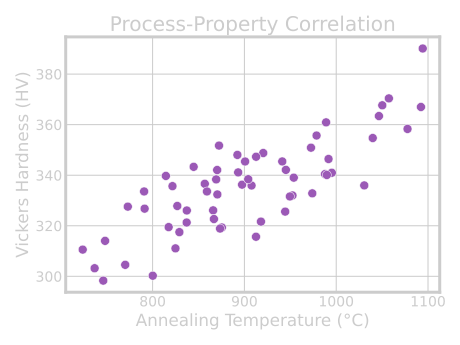
Materials example 2: defect classification from images
- Inputs: microscopy images + acquisition metadata.
- Target: defect class / defect probability.
- Risks: class imbalance, label noise, instrument-specific artifacts.
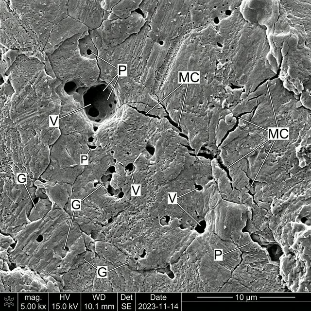
Materials example 3: spectra interpretation task framing
- Inputs: spectral signal (possibly multimodal context).
- Targets: composition class, phase indicator, or property proxy.
- Risks: baseline drift, preprocessing leakage, calibration instability.
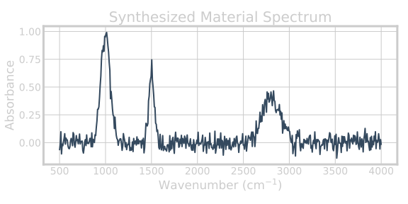
How MFML links to Materials Genomics
- MG relies on MFML’s risk/validation language for trustworthy discovery.
- Representation, latent spaces, and uncertainty all require Unit 1 foundations.
- Dataset quality and split logic dominate many downstream MG outcomes (Sandfeld et al. 2024).
How MFML links to ML-PC
- ML-PC applies the same principles to noisier experimental signals.
- Measurement physics introduces additional constraints on pipeline validity.
- MFML concepts become operational safeguards in lab workflows (McClarren 2021).
Lecture-essential vs exercise content split
Lecture essential:
- definitions, equations, assumptions, validity criteria.
Exercise essential:
- implementation, diagnostics, ablations, error analysis.
Exercise setup: NumPy linear regression from scratch
- Build linear regression objective and gradient updates manually.
- Implement train/validation split with strict separation.
- Plot training vs validation loss curves over iterations.
Exercise extension: regularization + split stress test
- Add L2 term and compare under/overfit behavior.
- Repeat with different split strategies (random vs grouped).
- Document when measured “improvement” is actually leakage-driven.
Exam-aligned summary: 10 must-know statements
- ML is optimization under uncertainty, not magic fitting.
- Train loss is not deployment success.
- Split design is part of the model.
- Leakage invalidates performance claims.
- Metrics must align with decisions.
- Uncertainty must be interpreted by type.
- Inductive bias is unavoidable.
- Domain constraints improve trustworthiness.
- Explainability is contextual, not absolute.
- Reproducibility is a scientific requirement.
References + reading assignment for next unit
- Required reading before Unit 2:
- Neuer: Ch. 1, 3, 4.1 - 4.4
- Optional depth:
- Murphy: Ch. 1.1–1.4
- Bishop: Ch. 1.1 and 1.3
- Next unit: linear algebra geometry for learning (projections, conditioning, SVD/PCA bridge).
McClarren, Ryan G. 2021. Machine Learning for Engineers: Using Data to Solve Problems for Physical Systems. Springer.
Meng, L., B. McWilliams, W. Jarosinski, H. Y. Park, Y. G. Jung, J. Lee, and J. Zhang. 2020. “Machine Learning in Additive Manufacturing: State-of-the-Art and Perspectives.” Additive Manufacturing 36: 101538. https://doi.org/10.1016/j.addma.2020.101538.
Neuer, Michael et al. 2024. Machine Learning for Engineers: Introduction to Physics-Informed, Explainable Learning Methods for AI in Engineering Applications. Springer Nature.
Sandfeld, Stefan et al. 2024. Materials Data Science. Springer.

© Philipp Pelz - Mathematical Foundations of AI & ML